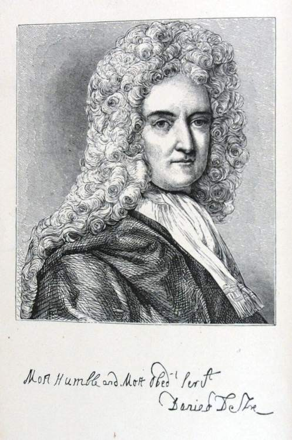
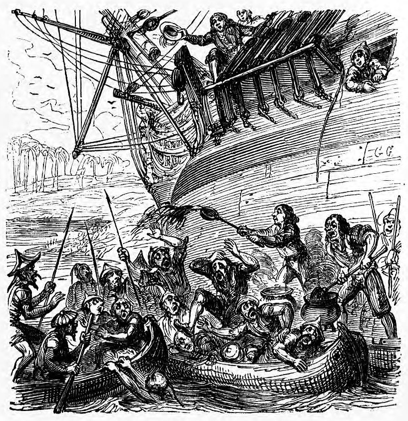
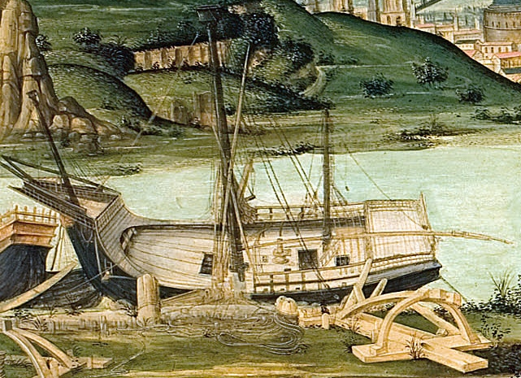
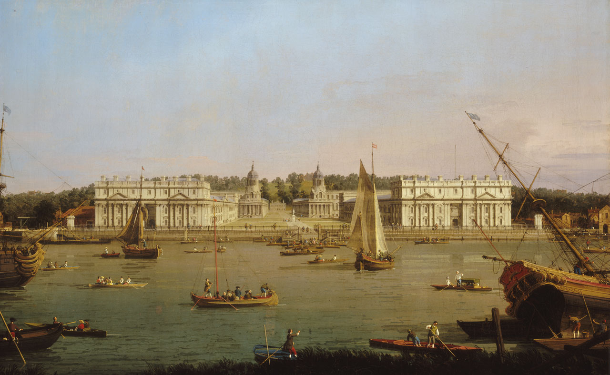

После долгого и утомительного пути, идя все время зигзагами и терпя недостаток в продовольствии, мы подошли, наконец, к берегам Кохинхины и решили войти в устье маленькой речки, которая была, однако, достаточно глубока. И счастье наше, что мы так сделали; это было нашим спасением; на следующее же утро в Тонкинский залив вошли два голландских судна, а третье, без всякого флага, но которое мы тоже сочли голландским, прошло всего в двух милях от нас, направляясь к берегам Китая; а под вечер тем же курсом прошли два английских корабля. Местность, где мы теперь находились, была дикая, варварская; население сплошь занималось воровством, так что мы натерпелись от него не мало, несмотря на то, что старались ограничить свои сношения с ним добыванием провизии в обмен за разные мелочи. Народец этот имел обыкновение смотреть на людей, которых к ним забрасывало кораблекрушением, как на своих пленников и рабов. Вскоре нам представился случай узнать, каково их гостеприимство.
Я уже заметил выше, что наш корабль, будучи в море, дал течь и что течь эту неожиданно удалось прекратить в сиамской бухте, перед самым преследованием английских и голландских лодок; но все-таки корабль оказался не настолько надежным и крепким, как нам было желательно, и мы решили, воспользовавшись тем, что мы стоим на месте, разгрузить его и вытащить, если возможно, на берег или поставить на мель, чтобы добраться до трюма и посмотреть, где трещина. А потому, спустив с корабля пушки и другой груз, мы накренили его на бок.
Accordingly, having lightened the ship, and brought all our guns, and other moveable things, to one side, we tried to bring her down, that we might come at her bottom; for, on second thoughts, we did not care to lay her dry aground, neither could we find out a proper place for it.
Туземцы, бродившие по берегу, немало дивились этому зрелищу; им оттуда не видно было наших людей, работавших на плотах и лодках у киля, и они вообразили, что корабль покинут экипажем. Придя к такому, заключению- они собрались всей ватагой и через несколько часов на десяти больших лодках подъехали к нам, без сомнения с целью грабежа; если бы они поймали нас врасплох, то наверное захватили бы в плен. Я скомандовал нашим людям, работавшим на плотах, немедля вскарабкаться на борт по обшивке, а тем, что были на лодках, обойти кругом и подойти сбоку, но не успели они выполнить приказ, как кохинхинцы настигли их и, взяв на абордаж наш баркас, стали хватать и забирать в плен наших матросов. Первый, на кого они наложили руку, был английский матрос, сильный, здоровый парень; в руках у него был мушкет, но он и не подумал стрелять, а положил его на дно лодки. "Вот дурак", подумал я; но оказалось, что он знает свое дело не хуже меня; облапив нападавшего на него дикаря, он перетащил его в нашу лодку и тут, схватив его за уши, с такой силой стукнул головой о борт, что у того дух вышибло. А тем временем голландец, стоявший рядом, поднял мушкет и принялся, колотить прикладом направо и налево, да так удачно, что положил пятерых туземцев, пытавшихся взобраться в нашу лодку. Но все таки; им не под силу было справиться с тридцатью-сорока врагами.
Однакоже довольно забавный случай помог нашим одержать полную победу.
Наш плотник как раз перед тем собрался очищать дно корабля и заливать пазы смолою в тех местах, где образовались трещины, и принес в лодку два котла - один с кипящею смолою, другой, наполненный камедью, салом и маслом, тоже кипящими; а его помощник захватил с собою большой железный черпак, и как только два дикаря вскочили в лодку, где он стоял, он зачерпнул полон ковш кипящей жидкости и плеснул ею в них, и так как дикари были полуголые, их до того ошпарило и обожгло, что они заревели, как быки, и, обезумев от боли, прыгнули оба в море. Плотник, увидев это, закричал: "Здорово, Джек, ну ка огрей их еще", и, выступив сам вперед, схватил швабру, а - его помощник другую и, обмакивая швабры в котел со смолою, они так хорошо угостили неприятелей, что из всех дикарей, размещенных в трех лодках, не осталось ни одного, который не был бы обожжен или обварен; а уж крик и вой они подняли такие, как волки в лесах на границе Лангедока.
Тем временем мой компаньон и я, с помощью части матросов, искусно повернули корабль, поставив его почти прямо, и водворили на место пушки, после чего наш пушкарь попросил меня приказать нашей лодке сойти прочь с дороги, потому что он сейчас будет стрелять. Я запретил ему стрелять, заявив, что плотник сделает все дело и один, без него, и приказал вскипятить еще котел смолы, уже приготовленный поваром; но враг был до того напуган отпором, полученным им в первую атаку, что уже не повторял нападения, а те лодки, что поотстали, увидя, что корабль качается на волнах и стоит прямо, должно быть поняли свою ошибку и отказались от своих планов.


